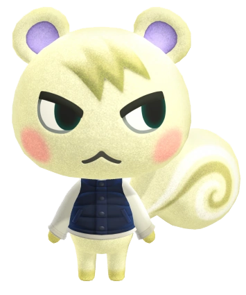
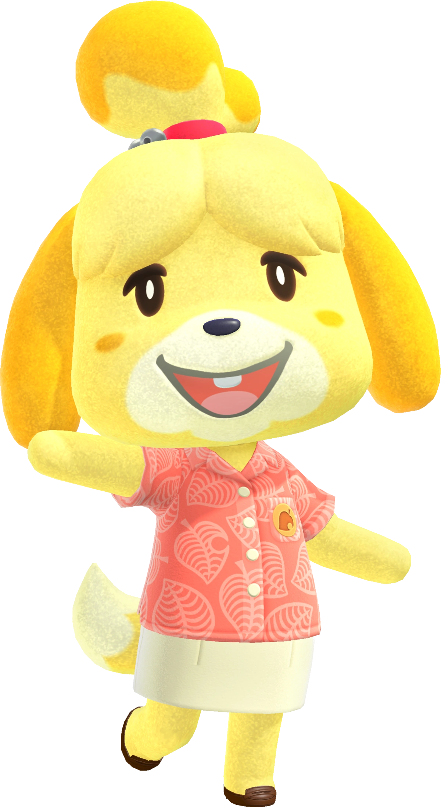

Animal Crossing: New Horizons
Objective
Animal Crossings is a franchise based game.
You need to upgrade your town and home, and pay off debts.
You start at a deserted island and are greeted by Tanukis (or racoons in the west) named the Nooks.
Then you go from there, making your own decisions on how to epxand your island.

Characters
Here are some of my favorite characters in Animal Crossing: NHR.
They are called villagers, and you can "collect" them and add them to your island.
They have different personalities and do different activities. There are animals and humanoids alike.

Tom Nook

Marshal
